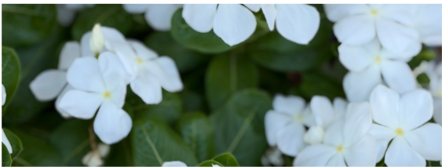

✳ A family project, grown a little bigger
Meet the kids
behind the farm.
We’re a family learning, growing, and making things together—one Saturday at a time.

How it all began
A little family project with a lot of heart.
The Rancho Kids Farm started as a fun little family project. It was a way for our kids to learn to grow things, make things, care for animals, work hard, and do a little more together.
Somewhere along the way, our backyard chickens, garden projects, freshly milled einkorn, and kitchen experiments turned into an idea we couldn’t resist: a little Saturday morning farm stand right here in our neighborhood.
We’re keeping it intentionally small, simple, and a little old-fashioned. More than what’s on the shelves, we hope the stand gives neighbors one more reason to stop, say hello, and get to know one another.
We’re so glad you found us!
✳ The girls of the backyard
Five very spoiled, happy hens.
Our small flock has room to scratch, forage, explore, stretch their wings, and take a good dust bath whenever the mood strikes. Organic layer feed is the foundation of their diet, with fruits and vegetables, organic scratch, and outdoor foraging, too.
Eggs are gathered regularly and refrigerated soon after collection. We leave them unwashed to preserve their natural bloom. They may vary in size, shape, and shade—and that’s part of having a real backyard flock.
Ask us about the eggs


Growing good things together
A little room for the neighborhood’s young makers.
We hope to make room for neighborhood kids to share things they’ve grown, made, or created. Stay tuned for more details!
Come be part of our Saturday
Grab something good
and say hello.
We’d love for The Rancho Kids Farm to become a little Saturday tradition in the neighborhood.
Visit or get in touch